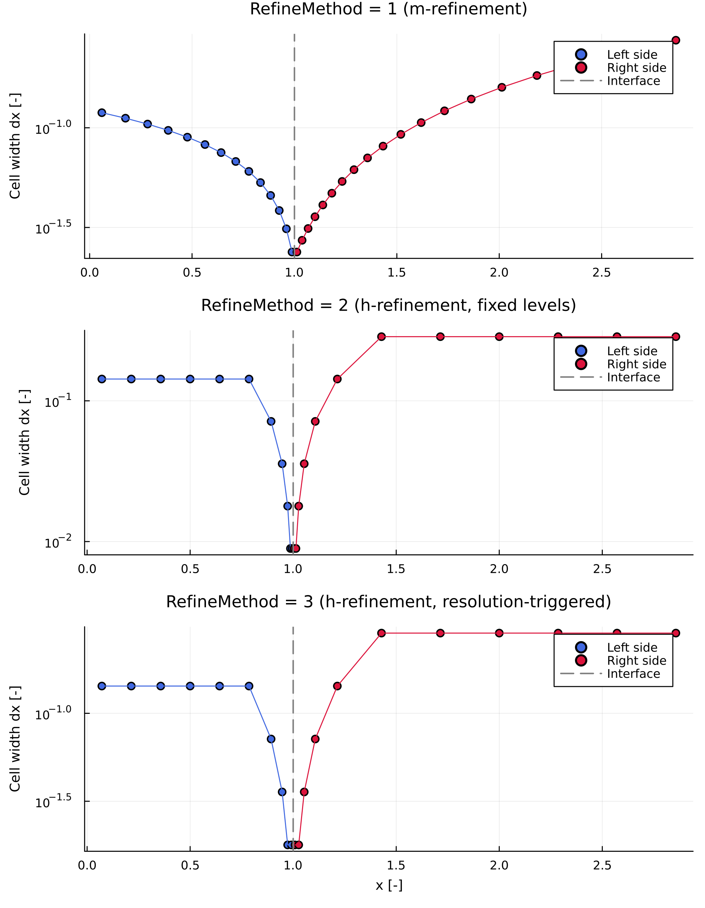

Mesh Refinement
As the interface moves, the grid on both sides is rebuilt around its new position at (almost) every time step (regrid!, called from within advect_interface_regrid! — see Numerical Approach). Three different strategies for how that new grid is graded are available via RefineMethod (see Quick Reference). All three share one goal: put the smallest cells next to the interface, where composition gradients are steepest, while keeping the two sides' cell sizes comparable at the interface so the FEM stencil there stays well behaved.
The plot below makes that shared goal, and the difference between the three methods, concrete: it shows the actual cell width dx at every node position for the same interface/domain, produced directly by create_grid!, h_refinement1, and h_refinement2 respectively (note the log scale — the interface cells are roughly an order of magnitude smaller than the outer ones in every method).

RefineMethod = 1 grades smoothly on both sides, with no jump anywhere in the profile. RefineMethod = 2/3 instead produce the "abrupt cell-size jumps" mentioned in Choosing a method below — each flat plateau is one bisection level, so cell width drops by a factor of 2 all at once rather than tapering — and 3's resolution-triggered stopping condition here happens to refine one level further than 2's fixed RefineLevel = 4, ending with a visibly smaller cell at the interface.
Resolution rebalancing
Before grading, regrid! first adjusts how many nodes each side gets, nr = [nr_left, nr_right]. As one phase grows at the expense of the other, node count is shifted toward it so nodal density stays roughly comparable on both sides:
\[n_{r,left} = \mathrm{round}\left(\frac{R_i[1]}{R_i[2]-R_i[1]}\, n_{r,right}\right) \quad (V_{ip} > 0)\]
\[n_{r,right} = \mathrm{round}\left(\frac{R_i[2]}{R_i[2]-R_i[1]}\, n_{r,left}\right) \quad (V_{ip} < 0)\]
subject to a floor set by resmin/nmin (each side never drops below its minimum node count). Only then is one of the three grading methods below applied.
RefineMethod = 1: m-refinement — create_grid! / define_new_grid
The left and right sides are graded by two genuinely different rules here, not one shared formula — worth being precise about, since they're easy to conflate.
Left side — a linear taper, controlled by MRefin: MRefin = 1 gives an equally spaced left grid; a negative MRefin also leaves it equally spaced (only the right side is then graded); MRefin > 1 tapers the cell width down linearly (constant difference between neighbours, not a constant ratio) from its outer value $\Delta x_{left,1}$ at the domain edge to $\Delta x_{left,1}/\mathrm{MRefin}$ at the interface:
\[\Delta x_{left,i} = \Delta x_{left,1}\left[1 - \frac{i-1}{n_{r,left}-2}\left(1 - \frac{1}{\mathrm{MRefin}}\right)\right], \qquad i = 1, \dots, n_{r,left}-1\]
Right side — always graded geometrically (constant ratio $R$ between neighbouring cells, $\Delta x_{right,i+1} = R\,\Delta x_{right,i}$), regardless of what the left side did. $R$ is chosen so the right side (a) starts at the interface with the same cell width $d$ the left side ends with, and (b) exactly spans the right-side domain length $S = R_i[2]-R_i[1]$ over nr[2]-1 cells — a geometric series:
\[S = d\sum_{i=0}^{n-1} R^i = d\,\frac{1-R^n}{1-R}\]
which is solved for $R$ with Newton's method (newton_solver); the resulting cell widths follow as $\Delta x_{right,i} = d\,R^{i-1}$ (make_dx_right). This is the default and generally best-performing method — it produces a smooth grid with no abrupt jumps in cell size.
RefineMethod = 2: h-refinement, fixed levels — h_refinement1
Starts from a uniform base mesh (nPoints nodes per side) and repeatedly bisects the cell next to the interface, inserting a midpoint node so its width halves each level:
\[\Delta x \rightarrow \Delta x / 2\]
The left side is bisected exactly RefineLevel times. The right side is then bisected independently, level by level, until its first cell width at the interface is no larger than the left side's — the same interface cell-size matching used in m-refinement, but achieved by mesh doubling rather than smooth grading.
RefineMethod = 3: h-refinement, resolution-triggered — h_refinement2
Same bisection idea as RefineMethod = 2, but the left side keeps bisecting until a resolution condition is met rather than a fixed number of levels:
\[\Delta x_{left}^{last} \le \mathrm{RefineCond} \cdot R_i[1]\]
i.e. until the last left-side cell is a small enough fraction (RefineCond) of the current interface radius. The right side then bisects to match, exactly as in RefineMethod = 2. Use this over RefineMethod = 2 when you want the refinement to track a changing interface radius rather than a fixed cell count.
Transferring the composition: shape-preserving interpolation
Once the new node positions are known, the existing composition profile has to be carried over onto them. This uses a shape-preserving piecewise cubic Hermite interpolant (pchip) rather than plain linear interpolation, since linear interpolation onto a refined grid can under/overshoot near a sharp gradient (e.g. right at the interface) and introduce compositions outside the physical range.
Choosing a method
RefineMethod = 1 (m-refinement) is the default across the templates in main_codes/ and is usually the best starting point — it avoids the abrupt cell-size jumps that repeated bisection can leave behind and needs only one parameter (MRefin) to tune. Reach for RefineMethod = 2/3 if you specifically want mesh doubling with a fixed or radius-relative number of refinement steps, e.g. to match a resolution study, or your setup is not well suited to the shape imposed by geometric grading.